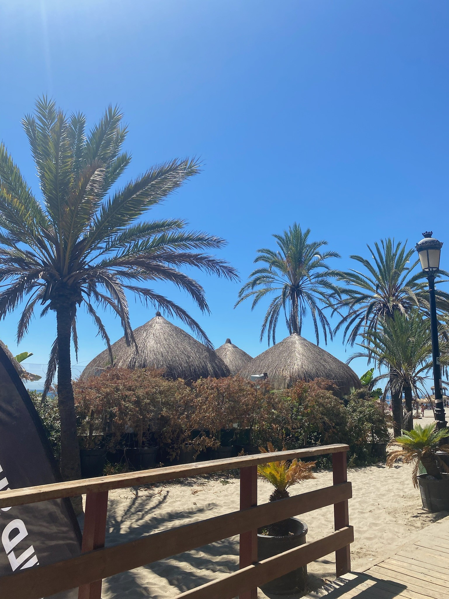

Qui suis-je ?
Je m'appelle Antoine MANCEAU, j'ai 22 ans et je suis passionné par l'industrie musicale depuis mon plus jeune âge, particulièrement par le rap et la musique urbaine. Actuellement en dernière année de licence Information et Communication à l'UCO d'Angers, je me destine à devenir chargé de projet au sein d'un label ou d'une maison de disque.
Mon parcours atypique, alliant droit et communication, mes expériences dans l'événementiel musical et ma passion personnelle pour la création musicale font de moi un profil polyvalent et déterminé.

Passion Musique

Voyages

Jeux Vidéo